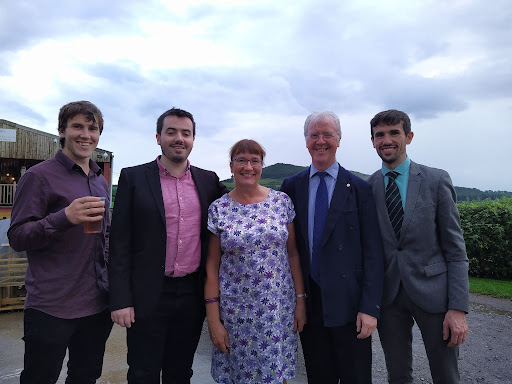
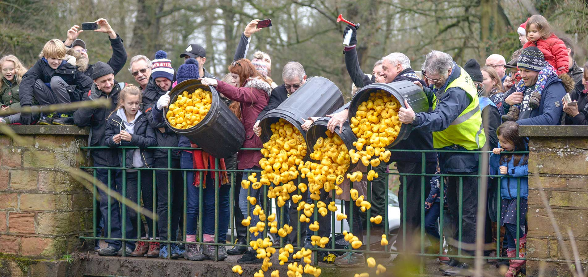
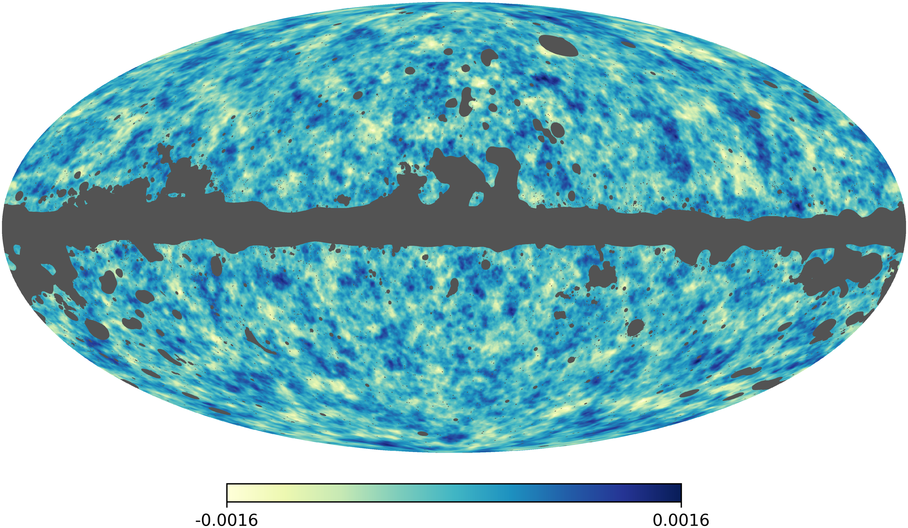
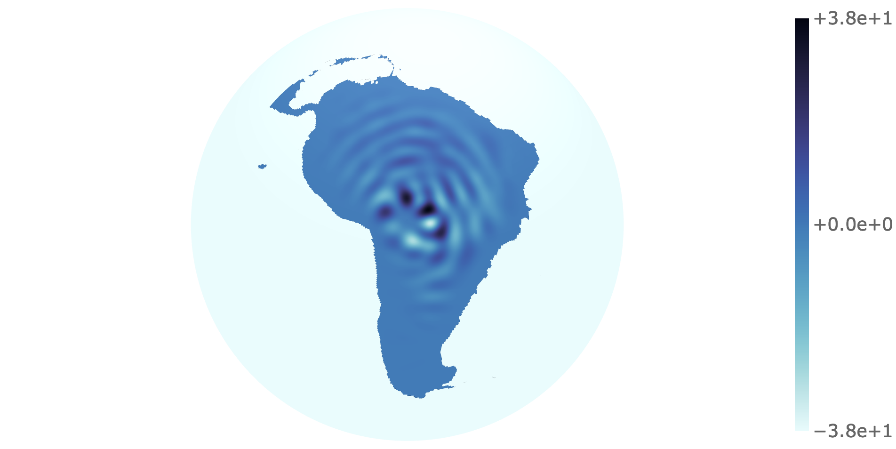
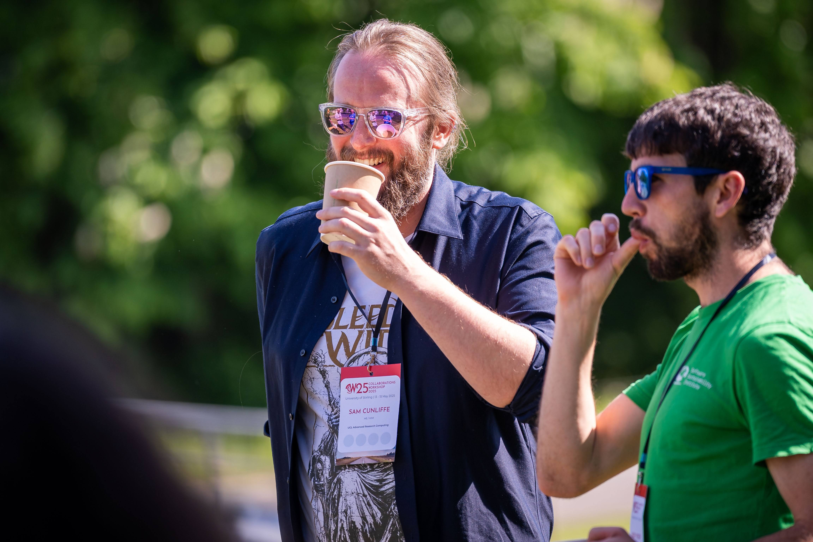

ARC: (Re)introduction
Patrick Roddy
2025-09-02
1994: Paris
Early Years
- Mum (English) met Dad (Irish) in Paris
- Left at age 3 and Andrew was 1
- Failed to learn French (or English) in that time 😔

1998: France → UK
Kenilworth
The Area
- Recorded as Chinewrde in the Domesday Book.
- Longest siege in medieval English history.
- Neighbours: Coventry, Warwick and Leamington Spa.
- Annual rubber duck race.
- Employers: National Grid, Jaguar Land Rover and University of Warwick.

Growing Up
- Scouts
- Hiking
- Guitar
- Cycling
- Skateboarding
- Running…
2013: Kenilworth → Cambridge
Cambridge
Undergraduate
2017: Cambridge → London
London
PhD (UCL)
Thesis
- Title: Slepian Wavelets for the Analysis of Incomplete Data on Manifolds.
- How to deal with data which is missing over a region of a manifold?
- Started on the sphere but generalised.
- Cosmology (CMB) was the motivation.


2021: ARC
- MIRSG
- DevOps
- Napari
- IoE
- Neuroglancer
- GLASS
- SRR
- AREPO

Running
- 2011 Two Castles Run (Warwick → Kenilworth).
- Met most friends through running.
- Run to work (sorry for the smell).
- Clubs: Kenilworth Runners, CUH&H, UCL RAX, TH&H, Cottage Relocated.
- PBs: 14:38, 30:13, 1:06:24, 2:18:08.
ARC: (Re)introduction